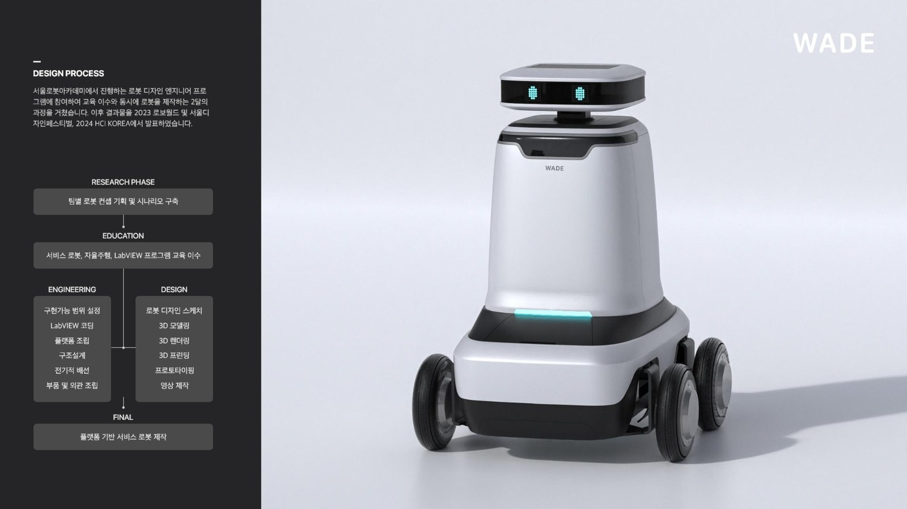

Wade.
거리 위에서 물로 그림을 그리는 자율주행 서비스 로봇. 이 자리에는 프로젝트 한 줄 설명이 들어갑니다 — 더미 카피 자리.

거리와 사람 사이, 부드럽게 스며드는 로봇
여기에는 프로젝트의 문제 정의와 접근 방식이 한 문단으로 들어갑니다. 더미 텍스트이며 실제 카피가 확정되면 이 블록에 치환됩니다. 본문 강조 키워드는 굵게 표기해 리듬을 만듭니다. 본 레이아웃은 원고 도착 전 톤·비율·정렬을 검증하기 위한 프리뷰입니다.
Placeholder English body. This paragraph carries the English translation of the Korean summary above in a lighter grey tone, sitting as a secondary read. The two-language treatment mirrors the reference layout — Korean as primary voice, English underneath as editorial subtext.
더미 국문 본문. 공공 공간에 도입된 로봇들은 정갈하고 중요한 공감대를 형성하기 어려웠으며, 이용자에게 부담감을 주기도 했습니다. 효율성만을 우선시한 설계는 기능 중심의 투박한 결과물을 낳았고, 그 결과 공공장소에 어울리지 않는 분위기가 된 것으로 파악됩니다. 로봇이 지나는 동선마다 발생하는 소음, 사용자의 시야를 가리는 부피, 그리고 사람과의 거리를 고려하지 않은 접근 방식은 일상적인 공간 경험을 오히려 방해하는 요소로 작동했습니다. 우리는 이 지점에서 로봇의 존재감이 어떻게 완화될 수 있는지, 그리고 공공 공간의 리듬을 해치지 않는 형태와 스케일이 무엇인지에 대한 질문에서 프로젝트를 시작했습니다.
The robotic cleaners previously installed in public spaces were ill-suited to the environment, and often made users feel uncomfortable — designs that prioritized efficiency ended up in clunky, function-first products. The noise generated along their routes, the volume that obstructed users' sightlines, and the approach that failed to account for interpersonal distance all interfered with everyday spatial experience. This project began from a question: how can a robot's presence be softened, and what form and scale would refuse to disrupt the rhythm of a public space.
기존 공중화장실에 도입된 로봇청소기들은 청결함과 프라이버시가 중요한 공공화장실 환경과는 어울리지 않으며, 이용자에게 위압감을 주기도 했습니다. 효율성을 우선시한 설계는 기능 중심의 투박한 결과물을 낳았고, 그 결과 공공장소 특유의 쾌적하고 편안한 분위기와는 거리가 먼 존재가 되었습니다. 특히 좁은 통로에서 마주치는 순간의 어색함, 예상치 못한 방향 전환의 불안감, 그리고 방문자와의 물리적 근접성에 대한 배려가 부족한 동선은 휴식의 공간이어야 할 화장실을 오히려 긴장의 공간으로 바꿔놓기도 했습니다. 이러한 관찰을 바탕으로 우리는 청소 로봇이 갖춰야 할 형태 언어를 사용자 중심에서 다시 정의하고자 했습니다.
The robotic cleaners previously installed in public restrooms were ill-suited to the public restroom environment, where cleanliness and privacy are paramount, and often made users feel uncomfortable. Designs that prioritized efficiency resulted in clunky, function-first products, which ultimately failed to contribute to the pleasant and comfortable atmosphere typical of public spaces. The awkwardness of an encounter in a narrow corridor, the anxiety of an unexpected turn, and the lack of consideration for physical proximity to visitors all turned what should be a restful space into a tense one. From these observations, we set out to redefine the formal language of a cleaning robot from the user's perspective.
더미 국문 캡션. WADE는 직장인들에게 자연스러운 몰입해제를 도와주는 핸드 디바이스입니다. 러닝이나 산책을 하는 동안 핸드 디바이스를 사용해 신체적 게이미피케이션 퀘스트를 수행할 수 있습니다. 손목이 아닌 손바닥에 안기는 형태를 택해, 시선을 화면에서 떼고 몸의 리듬에 다시 주의를 두게 만드는 것이 이 제품의 핵심 목적입니다. 알림은 진동과 짧은 라이트 패턴으로만 전달되며, 하루의 일정 시간이 지나면 자동으로 다음 세션을 제안합니다.
WADE proposes a hand device as a solution that helps users naturally disconnect from work. While running or walking, users can engage in physically gamified quests through the device. Shaped to nest in the palm rather than wrap around the wrist, it lifts the user's gaze off the screen and returns attention to the body's own rhythm. Notifications arrive only as short vibrations and light patterns, and after a set span of the day the device quietly suggests the next session.
더미 국문 캡션. WADE는 직장인들에게 자연스러운 몰입해제를 도와주는 핸드 디바이스입니다. 러닝이나 산책을 하는 동안 핸드 디바이스를 사용해 신체적 게이미피케이션 퀘스트를 수행할 수 있습니다. 걸음 수, 심박, 이동 반경을 가벼운 목표로 환산해 짧은 구간마다 성취감을 만들어 주고, 사용자는 그 과정에서 스마트폰 알림에서 조금씩 멀어지게 됩니다. 하나의 세션이 끝나면 오늘의 몸 상태와 감정 상태를 한 화면으로 요약해 보여줍니다.
WADE proposes a hand device as a solution that helps users naturally disconnect from work. While running or walking, users can engage in physically gamified quests through the device. Steps, heart rate, and range of motion are turned into light goals that build a small sense of accomplishment over short intervals, and the user gradually drifts away from phone notifications. When a session ends, the device sums up the day's physical and emotional state on a single screen.
더미 국문 캡션. 한 손에 잡히는 스케일에서 출발한 그립 스터디와 상단 디스플레이의 위치를 짧게 설명합니다. 엄지가 자연스럽게 걸리는 각도를 기준으로 상단 곡률을 다듬었고, 검지와 중지가 만나는 지점에는 미세한 리세스를 두어 오랜 시간 쥐어도 손가락 마디에 자국이 남지 않도록 배려했습니다. 디스플레이는 시선을 정면으로 들어올릴 필요가 없도록 본체보다 약 12도 안쪽으로 기울어져 있으며, 이 각도는 걷는 자세와 뛰는 자세 모두에서 정보 확인 시간을 최소한으로 줄여줍니다.
WADE proposes a hand device as a solution that helps users naturally disconnect from work. While running or walking, users can engage in physically gamified quests through the device. The upper curvature was tuned along the angle the thumb naturally rests at, and a subtle recess where the index and middle finger meet keeps the joints from marking after long sessions. The display tilts roughly 12° inward from the body so the user never has to lift their gaze — a geometry that shortens glance time in both walking and running postures.
더미 국문 캡션. 매트한 폴리카보네이트 바디에 미세한 소프트터치 코팅을 더해 손에 오래 쥐어도 미끄러지지 않도록 마감했습니다. 반사가 적은 표면은 야외 조도 아래에서도 로봇의 실루엣이 도드라지지 않게 합니다. 색상은 콘크리트, 아스팔트, 잔디와 같은 도시 환경의 톤에 자연스럽게 녹아들 수 있도록 저채도 계열로 구성했으며, 손의 온도로 표면 색이 아주 옅게 변하는 감온 필름을 부분 적용해 사용자가 자신의 상태를 촉각과 시각으로 동시에 느낄 수 있도록 설계했습니다.
A matte polycarbonate shell with a fine soft-touch coating keeps the device steady in hand over long sessions, while the low-reflection surface prevents the silhouette from standing out under bright outdoor light. The palette is built from low-chroma tones that settle into the city's own — concrete, asphalt, and grass — and a thermochromic film is applied in patches so the surface shifts subtly with the warmth of the hand, letting the user read their own state through both touch and sight.
더미 국문 캡션. 손바닥의 아치를 따라 완만하게 휘어지는 상단 곡면은 엄지의 자연스러운 접힘 각을 그대로 받아냅니다. 검지와 중지가 놓이는 측면에는 얕은 리세스를 두어 별도의 힘을 주지 않아도 디바이스가 제자리에 안착하도록 설계했으며, 러닝 중 반복되는 미세 진동에도 쥐는 힘을 다시 줄 필요가 없도록 마찰 계수가 다른 두 소재를 영역별로 분리 배치했습니다. 오랜 사용에도 손의 특정 부위에 압점이 생기지 않는 것을 목표로 그립 각도와 무게 중심을 수십 차례 재조정했습니다.
The upper curvature bends softly along the palm's arch and follows the thumb's natural fold without forcing it. Shallow recesses on the sides seat the index and middle fingers without conscious effort, and two materials with different friction coefficients are laid in zones so the hand never has to re-grip through the small, repeated vibrations of a run. Grip angle and center of mass were re-tuned dozens of times with a single goal: no pressure point on any part of the hand, even after prolonged sessions.
Camera
러닝이나 산책 중의 경험을 디바이스에 내장된 카메라로 기록할 수 있습니다.
The built-in camera allows users to document moments from their runs or walks.
USB Type-C
USB Type-C 단자로 디바이스를 간단하고 편리하게 충전합니다.
A USB Type-C port enables simple and convenient charging.
더미 국문 캡션. 스트랩 디테일이 하드웨어와 악세서리의 경계에서 어떻게 전체 시스템의 컬러 앵커가 되는지 설명합니다. 나일론 웨빙과 실리콘 바인딩을 결합해 인체 온도에서도 형태가 처지지 않도록 했으며, 락 버클은 한 손 조작만으로 길이를 조정할 수 있도록 원터치 구조로 설계했습니다. 스트랩은 본체와 동일한 저채도 팔레트를 공유하되, 안쪽 면에만 브랜드 시그니처 컬러를 얇게 노출시켜 착용 순간에만 사용자에게 존재감을 드러내는 절제된 표현 방식을 선택했습니다.
WADE proposes a hand device as a solution that helps users naturally disconnect from work. While running or walking, users can engage in physically gamified quests through the device. Nylon webbing bonded to a silicone binding keeps the strap from sagging at body temperature, and the buckle locks and adjusts with a single hand through a one-touch mechanism. The strap shares the body's low-chroma palette but exposes a thin line of the brand signature color on the inner face, so the accent only appears in the moment of wearing — a restrained gesture reserved for the user alone.
더미 국문 본문. 폼 목업부터 최종에 가까운 레진 프린트까지, 동일한 조명 하에서 형태 연속성을 비교한 프로세스 컷들을 보여줍니다. 초기 폼 목업은 손 안에 들어오는 부피와 무게 중심을 빠르게 확인하기 위한 용도로 제작되었으며, 이후 CNC로 다듬은 하드 폼과 3D 프린트 파트를 병행하며 그립 각도와 디스플레이 위치를 반복적으로 조정했습니다. 마지막 단계의 레진 프린트는 표면 마감과 컬러 코팅의 후보를 실제 사용 조건에서 검증하기 위한 것이며, 여기서 파생된 데이터가 최종 양산 사양의 기준이 되었습니다.
WADE proposes a hand device as a solution that helps office workers naturally disconnect from work. While running or walking, users can engage in physically gamified quests through the device. Early foam mockups let us verify volume and center of mass in the hand quickly, and later stages combined CNC-milled hard foam with 3D-printed parts to iterate on grip angle and display position. The final resin prints tested finish and color coating candidates under real-use conditions, and the data pulled from that phase became the reference for the production spec.
더미 국문 본문. 서로 다른 체형·그립 습관을 가진 사용자 세 명을 통해 제품이 몸에 어떻게 적응하는지 검증한 시나리오 촬영입니다. 손이 작은 사용자는 스트랩 최소 길이에서도 안정적인 파지가 가능한지, 손이 큰 사용자는 반대로 최대 길이에서 손목 회전이 자유로운지를 각각 확인했고, 평소 왼손잡이 사용자를 별도로 초대해 좌우 대칭 조작의 편의성도 점검했습니다. 시나리오는 정적인 착용 상태뿐 아니라 계단, 지하철, 도심 산책로와 같이 실제 사용이 예상되는 상황에서 촬영되었으며, 각 장면은 최종 형태의 방향을 결정하는 근거가 되었습니다.
WADE proposes a hand device as a solution that helps office workers naturally disconnect from work. While running or walking, users can engage in physically gamified quests through the device. We invited three users with different hand sizes and grip habits: small-handed users confirmed a stable hold at the strap's minimum length, larger-handed users checked that the maximum length still allowed free wrist rotation, and a left-handed user was brought in separately to verify symmetric operation. Scenarios were shot not only in static wearing states but on stairs, subway rides, and urban walking routes — settings that became the ground for the final form.